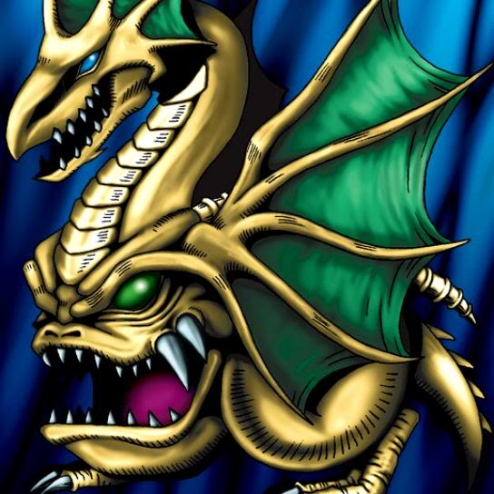

Wicked Dragon with the Ersatz Head

STATS
ATK: 900
DEF: 900DECK COST
Deck Cost per Card: 18Fusion List (73 Possible Fusions)
- Wicked Dragon with the Ersatz Head + Ameba = Spike Seadra
- Wicked Dragon with the Ersatz Head + Ancient Brain = Blackland Fire Dragon
- Wicked Dragon with the Ersatz Head + Ancient Jar = Stone D.
- Wicked Dragon with the Ersatz Head + Armed Ninja = Dragon Statue
- Wicked Dragon with the Ersatz Head + Armored Zombie = Dragon Zombie
- Wicked Dragon with the Ersatz Head + Axe Raider = Sword Arm of Dragon
- Wicked Dragon with the Ersatz Head + Bat = Metal Dragon
- Wicked Dragon with the Ersatz Head + Blue-Eyed Silver Zombie = Dragon Zombie
- Wicked Dragon with the Ersatz Head + Bolt Penguin = Thunder Dragon
- Wicked Dragon with the Ersatz Head + Brave Scizzar = Metal Dragon
- Wicked Dragon with the Ersatz Head + Celtic Guardian = Sword Arm of Dragon
- Wicked Dragon with the Ersatz Head + Clown Zombie = Dragon Zombie
- Wicked Dragon with the Ersatz Head + Curtain of the Dark Ones = Blackland Fire Dragon
- Wicked Dragon with the Ersatz Head + Cyber Soldier = Metal Dragon
- Wicked Dragon with the Ersatz Head + D. Human = Sword Arm of Dragon
- Wicked Dragon with the Ersatz Head + Dark King of the Abyss = Blackland Fire Dragon
- Wicked Dragon with the Ersatz Head + Darkworld Thorns = B. Dragon Jungle King
- Wicked Dragon with the Ersatz Head + Dimensional Warrior = D. Human
- Wicked Dragon with the Ersatz Head + Disk Magician = Metal Dragon
- Wicked Dragon with the Ersatz Head + Dissolverock = Stone D.
- Wicked Dragon with the Ersatz Head + Dragon Zombie = Skelgon
- Wicked Dragon with the Ersatz Head + Dragoness the Wicked Knight = D. Human
- Wicked Dragon with the Ersatz Head + Eldeen = Blackland Fire Dragon
- Wicked Dragon with the Ersatz Head + Electric Lizard = Thunder Dragon
- Wicked Dragon with the Ersatz Head + Electric Snake = Thunder Dragon
- Wicked Dragon with the Ersatz Head + Embryonic Beast = Koumori Dragon
- Wicked Dragon with the Ersatz Head + Fiend's Hand = Dragon Zombie
- Wicked Dragon with the Ersatz Head + Fire Reaper = Dragon Zombie
- Wicked Dragon with the Ersatz Head + Firegrass = B. Dragon Jungle King
- Wicked Dragon with the Ersatz Head + Frog The Jam = Spike Seadra
- Wicked Dragon with the Ersatz Head + Gate Deeg = Koumori Dragon
- Wicked Dragon with the Ersatz Head + Giga-tech Wolf = Metal Dragon
- Wicked Dragon with the Ersatz Head + Griggle = B. Dragon Jungle King
- Wicked Dragon with the Ersatz Head + Haniwa = Stone D.
- Wicked Dragon with the Ersatz Head + Holograph = Metal Dragon
- Wicked Dragon with the Ersatz Head + Hyosube = Spike Seadra
- Wicked Dragon with the Ersatz Head + Jellyfish = Spike Seadra
- Wicked Dragon with the Ersatz Head + Kagemusha of the Blue Flame = Dragon Statue
- Wicked Dragon with the Ersatz Head + Kageningen = Dragon Statue
- Wicked Dragon with the Ersatz Head + Kaminari Attack = Twin-Headed Thunder Dragon
- Wicked Dragon with the Ersatz Head + LaLa Li-oon = Thunder Dragon
- Wicked Dragon with the Ersatz Head + M-Warrior #2 = Dragon Statue
- Wicked Dragon with the Ersatz Head + Mammoth Graveyard = Koumori Dragon
- Wicked Dragon with the Ersatz Head + Mask of Darkness = Blackland Fire Dragon
- Wicked Dragon with the Ersatz Head + Masked Clown = Dragon Statue
- Wicked Dragon with the Ersatz Head + Mechanical Spider = Metal Dragon
- Wicked Dragon with the Ersatz Head + Mega Thunderball = Thunder Dragon
- Wicked Dragon with the Ersatz Head + Megirus Light = Blackland Fire Dragon
- Wicked Dragon with the Ersatz Head + Morphing Jar = Stone D.
- Wicked Dragon with the Ersatz Head + Muka Muka = Stone D.
- Wicked Dragon with the Ersatz Head + Mystic Lamp = Blackland Fire Dragon
- Wicked Dragon with the Ersatz Head + Mystical Sheep #2 = Mystical Sheep #1
- Wicked Dragon with the Ersatz Head + Oscillo Hero #2 = Thunder Dragon
- Wicked Dragon with the Ersatz Head + Petit Dragon = Koumori Dragon
- Wicked Dragon with the Ersatz Head + Phantom Dewan = Blackland Fire Dragon
- Wicked Dragon with the Ersatz Head + Phantom Ghost = Dragon Zombie
- Wicked Dragon with the Ersatz Head + Pot the Trick = Stone D.
- Wicked Dragon with the Ersatz Head + Pumpking the King of Ghosts = Curse of Dragon
- Wicked Dragon with the Ersatz Head + Rhaimundos of the Red Sword = D. Human
- Wicked Dragon with the Ersatz Head + Sectarian of Secrets = Blackland Fire Dragon
- Wicked Dragon with the Ersatz Head + Skull Servant = Dragon Zombie
- Wicked Dragon with the Ersatz Head + Solitude = Koumori Dragon
- Wicked Dragon with the Ersatz Head + The Snake Hair = Dragon Zombie
- Wicked Dragon with the Ersatz Head + The Wandering Doomed = Dragon Zombie
- Wicked Dragon with the Ersatz Head + Thunder Dragon = Twin-Headed Thunder Dragon
- Wicked Dragon with the Ersatz Head + Time Wizard = Thousand Dragon
- Wicked Dragon with the Ersatz Head + Twin Long Rods #2 = Spike Seadra
- Wicked Dragon with the Ersatz Head + Unknown Warrior of Fiend = Dragon Statue
- Wicked Dragon with the Ersatz Head + Water Element = Spike Seadra
- Wicked Dragon with the Ersatz Head + Waterdragon Fairy = Spike Seadra
- Wicked Dragon with the Ersatz Head + Wood Clown = Dragon Statue
- Wicked Dragon with the Ersatz Head + Yamatano Dragon Scroll = Koumori Dragon
- Wicked Dragon with the Ersatz Head + Destroyer Golem = Stone D.